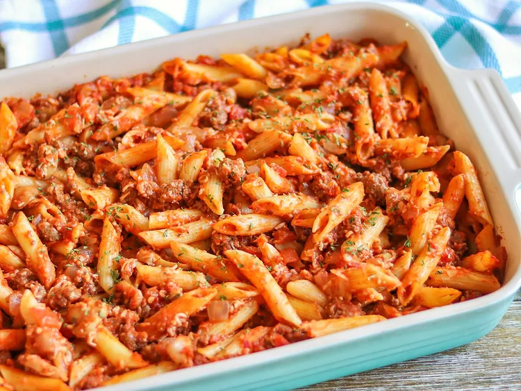

Pasta Bake Recipe
Home

Description
This saucy casserole features layers of texture from melty cheese, ground beef, and tender pasta
- 8 ounces mostaccioli, or similar size, pasta
- 1 pound lean ground beef
- 1 onion, chopped
- 1 (28 ounce) jar spaghetti sauce
- 2 cups shredded mozzarella cheese
- 1 (4 ounce) can mushrooms, drained/li>
Steps
- Preheat the oven to 325 degrees F (165 degrees C). Grease a 9x13-inch casserole dish.
- Fill a large pot with lightly salted water and bring to a rolling boil. Stir in mostaccioli and return to a boil. Cook mostaccioli uncovered, stirring occasionally, until tender yet firm to the bite, 8 to 10 minutes. Drain well.
- Meanwhile, cook ground beef and onion in a skillet over medium heat until browned.
- Combine spaghetti sauce, mozzarella cheese, mushrooms, mostaccioli, and ground beef mixture in a large bowl; transfer to the prepared casserole dish.
- Bake in the preheated oven until very hot, about 20 minutes.